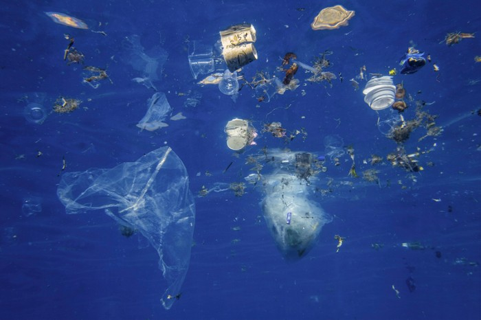
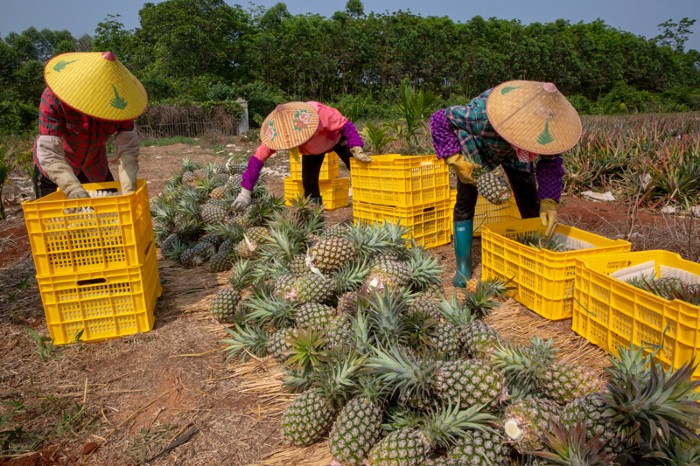

Bitcoin no longer supported by Stripe
Dec 7, 2020
The online payments processor, Stripe, has announced its decision to remove bitcoin from its payments options. After having included the cryptocurrency in 2014, the American technology company has declared that bitcoin has now become too volatile, too slow to process (confirmation of payment can take up to 10 minutes) and incurs too many fees. Indeed, the Stripe product manager Tom Karlo declared that bitcoin has become more of an asset than an actual means of exchange. As stated for Finextra, Karlo adds that “for a regular bitcoin transaction, a fee of tens of US dollars is common, making bitcoin transactions as expensive as bank wires”. This decision comes at a time when the cryptocurrency is going through some rocky terrain and many experts are questioning its role as an actual payment method.
Families un-locked: Relationships emerging from COVID-19 into the 'new normal' - Survey
13 May 2021

This international survey is investigating how families are adapting to the challenges brought by the COVID-19 pandemic.
This survey is being undertaken in Australia by Griffith University and Relationships Australia and is led by the University of Worcester in the United Kingdom. People aged over 18 are invited to take part in this survey, which will explore the pandemic’s effects on home schooling, isolation and confinement, work, health and wellbeing, financial insecurity, and conflict. The views of frontline workers are of particular interest. The survey is expected to take about 20 minutes to complete.
Humanity’s fast-food habit is filling the ocean with plastic
Food bags, drink bottles and similar items account for the biggest share of plastic waste near the shore.
Poor harvest: farmers earn a pitiful fraction of the money spent on food
The bulk of consumer food spending around the world ends up in the coffers of distributors, processors and other parties beyond the farm gate.